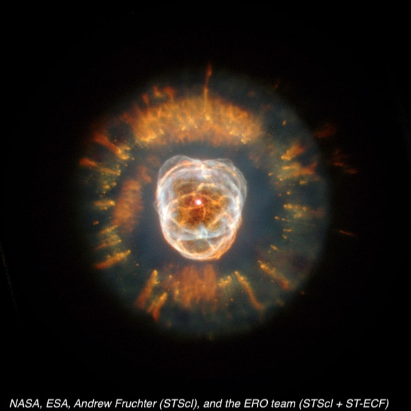
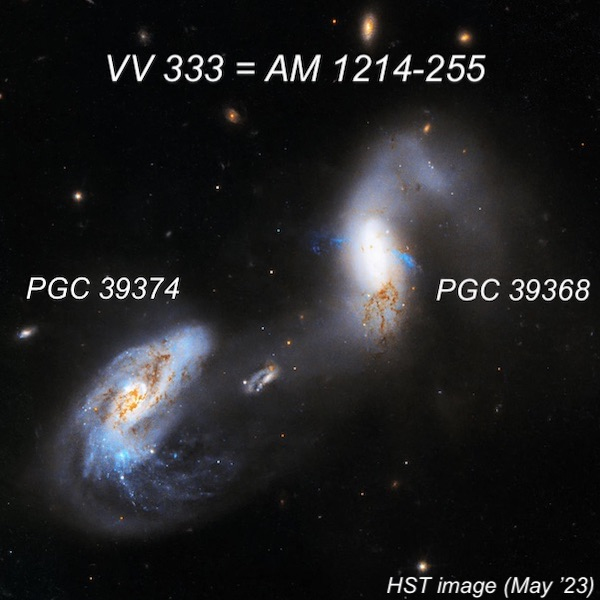

Deep Sky Delights from Texas – Part I
On Wednesday, May 13th, I set my alarm before 5:00 AM to catch a 6:35 flight from Oakland to Denver and on to El Paso. When I arrived I met up with Akarsh (who had spent the previous night in El Paso) and Howard Banich for one of our semi-regular trips to remote Fort Davis (population around 900) in west Texas. The town is home to McDonald Observatory and its 10-meter (400-inch) Hobby-Eberly Telescope, and the site of the annual Texas Star Party, which was taking place that week at the Prude Ranch. But we were headed directly to the home of Jimi Lowrey, where we were planning to do most of our observing on his 48-inch f/4.0 mega-sized scope. We were last there this past November, and in fact this was my 26th trip! After picking up a rental car at the airport, we had lunch at Akarsh’s favorite Tex-Mex restaurant in town, the L & J Café, and then hit the road for the 3-hour drive to the Davis Mountains.
The observers at the star party had already enjoyed a few nights of clear skies, but the forecast for Wednesday night was poor. Akarsh wanted to socialize at the large star party just down the road, so he drove to Prude Ranch while we hung around as the cloudy skies partially cleared after sunset. In fact, we ended up having a couple hours of clear skies before a large bank of clouds arrived around midnight. Just at the end, Akarsh returned and walked up the hill to the observatory, surprised he had missed some good viewing.
Around 10:30, we noticed a large, irregular glow in the northern sky. The next day, Spaceweather.com reported, “A ‘Methalox comet’ over the USA: Last night, a glowing comet-like apparition swept across the skies of the central United States–but it wasn't a comet. The source was China's Zhuque-2E Y5 rocket, which lifted off about an hour earlier carrying a 2.8-ton payload to a 900-km polar orbit. What sets this rocket apart is its fuel: liquid methane and liquid oxygen, or "methalox.””.
We often start off with some eye-candy, and on this night it was NGC 2392 in Gemini. Using 813x, we had a gorgeous view of the double turquoise shells surrounding the intensely bright central star. The vivid inner ring had an irregular outline, bulging out on the north side, where it splits into a double ring, forming a small, darker “pouch” or “chin with a chin strap” at the bottom (in the eyepiece) of the “face.” The outer shell had an irregular surface brightness with a fuzzy texture.

Arp-Madore 1214-255 (or VV 333) is an interacting pair of galaxies in Hydra, and both contain active galactic nuclei (and accreting supermassive black holes). Using 610x, the western galaxy (ESO 505-030) appeared fairly bright, elongated 5:3 N-S, ~30” in diameter. It was very well concentrated with an intense core and a stellar nucleus. The eastern galaxy (ESO 505-031) was moderately bright, elongated 2:1 NW-SE, ~30" diameter, with a slightly brighter core. A third diffuse galaxy was easily seen in the field to the southwest. This turned out to be PGC 3785672 at B ~ 16.6.

The view of Omega Centauri at 287x was jaw-dropping, even though it may have been somewhat compromised by clouds. Although Omega Cen scrapes the horizon from the latitude of the Bay Area, here it reaches 12° elevation on the meridian and suffers less extinction and seeing issues. Several thousand stars were resolved from edge-to-edge across the 17' field of view. The center was fully resolved with myriads of faint stars, with a few, tiny starless “holes” that were outlined by numerous stars.
While we were in the neighborhood, we had to take a look at the remarkable bisected radio galaxy Centaurus A, which is likely the result of a merger. Its jet-black, irregular dust lane displayed very high contrast with scalloped edges and brighter filaments within the dust lane (possibly the obscured nucleus of the galaxy). At a distance of 11-12 million light years, Cen A is the fifth brightest galaxy in the sky, with a magnitude of V = 6.8.
As predicted, the clouds obscured much of the sky after midnight, so after a quick look at the challenging Fourcade-Figueroa Galaxy (a disrupted superthin galaxy only 2° from Cen A) we called it an early night.
To be continued…